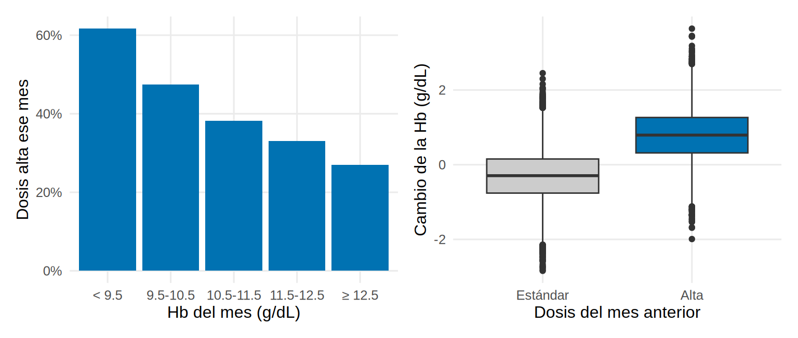
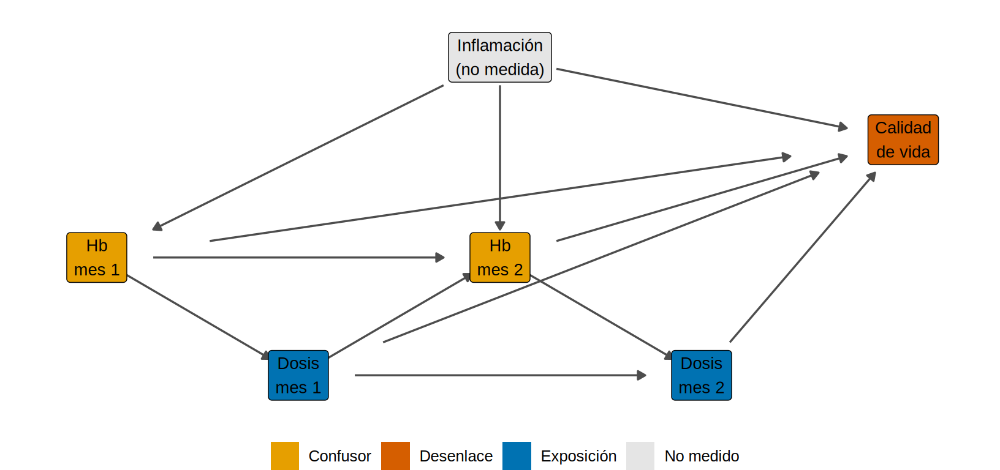
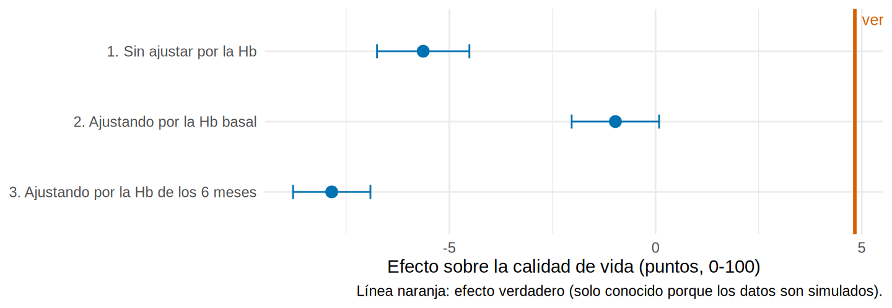

library(tidyverse)
source("R/funciones_epi.R") # dibujar_dag()
source("R/funciones_extra_a.R") # num(), pct()
source("R/funciones_extra_cap1213.R") # grafico_estimaciones()
source("R/simular_cap19_epo.R") # simular_hd_epo(), verdad_hd_epo()
source("R/funciones_cap19.R") # agregar_rezagos(), a_ancho_hd()
theme_set(theme_minimal(base_size = 12) + theme(panel.grid.minor = element_blank()))Confusión dependiente del tiempo: EPO y hemoglobina en hemodiálisis
Nota🩺 Escenario
Tienes un registro de pacientes en hemodiálisis. Cada mes, el nefrólogo mira la hemoglobina (Hb) y decide la dosis del agente estimulante de la eritropoyesis (AEE o “EPO”): si la Hb está baja, la sube; si está en rango, la mantiene. Seis meses después quieres saber si mantener la dosis alta mejora la calidad de vida. El problema: la Hb que el nefrólogo usó para decidir fue producida por la dosis del mes anterior. La misma variable es causa y consecuencia del tratamiento.
Lo que vamos a hacer
- Simular (datos ficticios, con verdad conocida) una cohorte de hemodiálisis con seis visitas mensuales.
- Entender por qué la Hb es a la vez confusor, mediador y colisionador, y dibujarlo.
- Ver que la regresión ordinaria falla dos veces: si no ajustas por la Hb y si la ajustas.
- Nombrar los supuestos que necesitarán los métodos de 19.2 (ponderación) y 19.3 (fórmula g).
Paso 1. Una cohorte simulada de hemodiálisis
Simulamos 5 000 pacientes seguidos seis meses. Todo es ficticio y la simulación está documentada en R/simular_cap19_epo.R. En cada visita mensual:
- se mide la Hb (g/dL);
- el nefrólogo decide la dosis del mes: dosis alta (1) o estándar (0), según la Hb de ese momento y la dosis del mes anterior;
- la dosis modifica la Hb del mes siguiente.
Al final del mes 6 se mide la calidad de vida (0-100, más alto es mejor). Hay un estado inflamatorio que baja la Hb y la calidad de vida y que no está registrado.
# A tibble: 12 × 8
id mes hb dosis_alta edad dm tiempo_hd calidad_vida
<int> <int> <dbl> <dbl> <dbl> <int> <dbl> <dbl>
1 1 1 11.8 0 75 1 0.4 NA
2 1 2 11.3 0 75 1 0.4 NA
3 1 3 12.5 0 75 1 0.4 NA
4 1 4 11.8 0 75 1 0.4 NA
5 1 5 11.7 0 75 1 0.4 NA
6 1 6 11 1 75 1 0.4 57.8
7 2 1 10.1 1 68 0 2.7 NA
8 2 2 11.6 1 68 0 2.7 NA
9 2 3 11.4 1 68 0 2.7 NA
10 2 4 10.7 1 68 0 2.7 NA
11 2 5 11.2 1 68 0 2.7 NA
12 2 6 12.5 0 68 0 2.7 49.2Qué vemos: cada paciente ocupa 6 filas, una por mes (formato largo o persona-tiempo). La calidad de vida solo se registra en el mes 6. Observa al paciente 1: la dosis cambia de un mes a otro según la Hb del mes.
Paso 2. Formato largo y formato ancho
Un mismo registro se puede guardar de dos maneras, y cada método necesita una:
- Largo (una fila por paciente y mes): sirve para modelar la decisión de cada mes (pesos, fórmula g).
- Ancho (una fila por paciente, una columna por mes): sirve para el modelo del desenlace final.
Pasar de uno a otro es pivot_wider() y pivot_longer():
ancho <- hd |>
select(id, mes, hb, dosis_alta) |>
pivot_wider(names_from = mes, values_from = c(hb, dosis_alta), names_sep = "_") # hb_1..hb_6, dosis_alta_1..dosis_alta_6
ancho |> select(id, hb_1, hb_2, hb_3, dosis_alta_1, dosis_alta_2, dosis_alta_3) |> head(4) |> mutate(across(starts_with("hb"), \(x) round(x, 1)))# A tibble: 4 × 7
id hb_1 hb_2 hb_3 dosis_alta_1 dosis_alta_2 dosis_alta_3
<int> <dbl> <dbl> <dbl> <dbl> <dbl> <dbl>
1 1 11.8 11.3 12.5 0 0 0
2 2 10.1 11.6 11.4 1 1 1
3 3 11.3 11.5 13.1 0 1 1
4 4 9.7 10.2 11.2 1 1 1La función a_ancho_hd() (en R/funciones_cap19.R) hace lo mismo y además añade las covariables basales, el desenlace y la dosis acumulada (cuántos de los 6 meses el paciente recibió dosis alta). Para volver a largo:
ancho <- a_ancho_hd(hd)
ancho |> select(id, hb_1, hb_2, dosis_alta_1, dosis_alta_2) |> head(2) |>
pivot_longer(-id, names_to = c(".value", "mes"), names_pattern = "(.*)_(\\d)") # cada paciente vuelve a ocupar una fila por mes# A tibble: 4 × 4
id mes hb dosis_alta
<int> <chr> <dbl> <dbl>
1 1 1 11.8 0
2 1 2 11.3 0
3 2 1 10.1 1
4 2 2 11.6 1Para modelar la decisión del mes \(t\) necesitamos que cada fila conozca su pasado: la Hb y la dosis del mes anterior. agregar_rezagos() las añade (en el mes 1 no hay dosis previa: todos parten con dosis estándar):
# A tibble: 6 × 5
mes hb hb_previa dosis_alta dosis_previa
<int> <dbl> <dbl> <dbl> <dbl>
1 1 11.8 11.8 0 0
2 2 11.3 11.8 0 0
3 3 12.5 11.3 0 0
4 4 11.8 12.5 0 0
5 5 11.7 11.8 0 0
6 6 11 11.7 1 0Paso 3. El bucle: la Hb decide la dosis, la dosis cambia la Hb
Comprobemos las dos mitades del bucle en los datos. Primero, qué tan seguido se usa dosis alta según la Hb del mes; segundo, cómo cambia la Hb de un mes al siguiente según la dosis recibida:
library(patchwork)
p1 <- hd_l |>
mutate(tramo_hb = cut(hb, c(-Inf, 9.5, 10.5, 11.5, 12.5, Inf), labels = c("< 9.5", "9.5-10.5", "10.5-11.5", "11.5-12.5", "≥ 12.5"), right = FALSE)) |>
group_by(tramo_hb) |> summarise(prop = mean(dosis_alta), n = n()) |>
ggplot(aes(tramo_hb, prop)) + geom_col(fill = "#0072B2") +
scale_y_continuous(labels = scales::percent) +
labs(x = "Hb del mes (g/dL)", y = "Dosis alta ese mes")
p2 <- hd_l |>
filter(mes >= 2) |>
mutate(cambio = hb - hb_previa, dosis = factor(dosis_previa, 0:1, c("Estándar", "Alta"))) |>
ggplot(aes(dosis, cambio, fill = dosis)) + geom_boxplot(show.legend = FALSE) +
scale_fill_manual(values = c("grey80", "#0072B2")) +
labs(x = "Dosis del mes anterior", y = "Cambio de la Hb (g/dL)")
p1 + p2
Qué vemos: con Hb < 9.5 el 62 % de los pacientes-mes recibe dosis alta; con Hb ≥ 12.5, el 27 %. Y tras un mes con dosis alta la Hb cambia en promedio 0.79 g/dL, frente a -0.30 tras dosis estándar. Hay dosis alta y estándar en todos los tramos de Hb: eso será importante para la positividad (más abajo).
Paso 4. Los tres papeles de la hemoglobina
Dibujemos la historia con dos de los seis meses (con seis, el dibujo sería ilegible; la lógica se repite). \(Hb_1\) y \(Hb_2\) son las hemoglobinas de los meses 1 y 2; \(A_1\) y \(A_2\), las dosis; \(Y\), la calidad de vida; \(U\), el estado inflamatorio no medido.
nodos <- tribble(
~nombre, ~x, ~y, ~etiqueta, ~rol,
"H1", 1, 1.5, "Hb\nmes 1", "confusor",
"A1", 2.5, 0.5, "Dosis\nmes 1", "exposicion",
"H2", 4, 1.5, "Hb\nmes 2", "confusor",
"A2", 5.5, 0.5, "Dosis\nmes 2", "exposicion",
"Y", 7, 2.5, "Calidad\nde vida", "desenlace",
"U", 4, 3.2, "Inflamación\n(no medida)", "no medido"
)
aristas <- tribble(
~de, ~a,
"H1", "A1", "A1", "H2", "H2", "A2", "H1", "H2", "A1", "A2", # el bucle dosis-Hb
"A1", "Y", "A2", "Y", "H1", "Y", "H2", "Y", # efecto de la dosis y de la Hb sobre Y
"U", "H1", "U", "H2", "U", "Y" # la inflamación mueve la Hb y la calidad de vida
)
dibujar_dag(nodos, aristas)
La \(Hb_2\) cumple tres papeles a la vez:
- Confusor de la dosis 2: causa la decisión (\(Hb_2 \rightarrow A_2\)) y afecta a \(Y\) (\(Hb_2 \rightarrow Y\)). Hay que ajustar por ella, o compararás pacientes con Hb baja (más graves) con pacientes con Hb alta.
- Mediador de la dosis 1: parte del efecto de \(A_1\) pasa por la Hb (\(A_1 \rightarrow Hb_2 \rightarrow Y\)). Si ajustas por ella, bloqueas justo el efecto que querías medir.
- Colisionador entre \(A_1\) y \(U\): (\(A_1 \rightarrow Hb_2 \leftarrow U\)). Si ajustas por ella, abres una asociación falsa entre la dosis pasada y la inflamación, que también afecta a \(Y\).
Ese es el dilema. Ajustar y no ajustar por la Hb hacen daño, por motivos distintos. Los métodos G (19.2 y 19.3) lo resuelven sin condicionar el desenlace a la Hb.
Paso 5. La verdad: simular el mundo bajo cada estrategia
Como los datos son simulados, podemos hacer lo que en la vida real es imposible: repetir el mundo con los mismos pacientes y el mismo azar, imponiendo una estrategia a todos. Comparamos tres:
- nunca: dosis estándar los 6 meses;
- siempre: dosis alta los 6 meses;
- dinámica: dosis alta solo en los meses en que la Hb es < 10 g/dL (una regla clínica).
# A tibble: 3 × 3
estrategia media_y efecto_vs_nunca
<chr> <dbl> <dbl>
1 nunca 55.3 0
2 siempre 60.1 4.83
3 dinamica 55.9 0.63efecto_verdad <- verdad$efecto_vs_nunca[verdad$estrategia == "siempre"]
efecto_dinamica <- verdad$efecto_vs_nunca[verdad$estrategia == "dinamica"]Qué vemos: seis meses de dosis alta frente a seis de dosis estándar suben la calidad de vida media en 4.83 puntos (esa es la verdad que queremos recuperar). La estrategia dinámica gana 0.63 puntos frente a no usar dosis alta. El efecto total mezcla dos fuerzas que diseñamos: un efecto directo de la dosis alta que resta (−0.4 puntos por mes, por efectos adversos) y un efecto indirecto positivo a través de la Hb.
Paso 6. Primero el resultado feo: la regresión ordinaria
Con los datos ya “observados” (sin repetir el mundo), la tentación es una regresión lineal de la calidad de vida sobre la dosis acumulada (meses con dosis alta). Multiplicamos el coeficiente por 6 para expresarlo como “6 meses de dosis alta frente a ninguno”. Probamos tres versiones:
efecto_6m <- function(modelo, k = 6) { # coeficiente de la dosis acumulada x 6, con IC 95 %
b <- coef(summary(modelo))["dosis_acum", ]
tibble(estimado = unname(k * b[1]), ic_inf = unname(k * (b[1] - 1.96 * b[2])), ic_sup = unname(k * (b[1] + 1.96 * b[2])))
}
basal <- "dosis_acum + edad + dm + tiempo_hd"
hb_todas <- paste0("hb_", 1:6, collapse = " + ")
regs <- bind_rows(
`1. Sin ajustar por la Hb` = efecto_6m(lm(as.formula(paste("calidad_vida ~", basal)), ancho)),
`2. Ajustando por la Hb basal` = efecto_6m(lm(as.formula(paste("calidad_vida ~", basal, "+ hb_1")), ancho)),
`3. Ajustando por la Hb de los 6 meses` = efecto_6m(lm(as.formula(paste("calidad_vida ~", basal, "+", hb_todas)), ancho)),
.id = "metodo")
regs |> mutate(across(where(is.numeric), \(x) round(x, 2)))# A tibble: 3 × 4
metodo estimado ic_inf ic_sup
<chr> <dbl> <dbl> <dbl>
1 1. Sin ajustar por la Hb -5.63 -6.75 -4.51
2 2. Ajustando por la Hb basal -0.97 -2.03 0.09
3 3. Ajustando por la Hb de los 6 meses -7.85 -8.79 -6.91grafico_estimaciones(regs, efecto_verdad, etiqueta_x = "Efecto sobre la calidad de vida (puntos, 0-100)")
Qué vemos: la verdad es +4.83. Sin ajustar por la Hb, la regresión dice -5.63: los pacientes que más dosis alta reciben son los que tenían la Hb más baja y estaban peor (confusión por indicación). Ajustar solo por la Hb basal da -0.97, que sigue lejos (la Hb de los meses siguientes sigue confundiendo). Y ajustar por la Hb de los 6 meses da -7.85, aún peor. Ninguna versión se acerca.
Paso 7. Por qué falla: el oráculo lo desarma
Con la simulación podemos hacer lo imposible: añadir la inflamación que en la vida real no está medida (el “oráculo”). Si ajustamos por toda la Hb y por la inflamación, quitamos el sesgo del colisionador. Lo que queda debería ser el efecto directo de la dosis (−0.4 por mes, o −2.4 en seis meses), porque la Hb ya no deja pasar el efecto indirecto:
hd_o <- simular_hd_epo(n = 5000, K = 6, semilla = 2024, incluir_u = TRUE) # misma cohorte, con la inflamación verdadera
ancho_o <- ancho |> left_join(distinct(hd_o, id, u_infl), by = "id")
oraculo <- efecto_6m(lm(as.formula(paste("calidad_vida ~", basal, "+", hb_todas, "+ u_infl")), ancho_o))
oraculo |> mutate(across(everything(), \(x) round(x, 2)))# A tibble: 1 × 3
estimado ic_inf ic_sup
<dbl> <dbl> <dbl>
1 -2.18 -3.2 -1.16Qué vemos: el efecto cae a -2.18 (IC -3.20 a -1.16), compatible con el efecto directo de −2.4. Entonces el ajuste por la Hb:
- borra el efecto indirecto (el beneficio que pasa por la Hb): de 4.83 a unos −2.4;
- y, sin la inflamación en el modelo, añade un sesgo por colisionador: de −2.4 baja a -7.85.
Paso 8. Los supuestos que sí necesitan los métodos G
Los métodos de 19.2 y 19.3 no son magia. Descansan en cuatro supuestos, que hay que defender con conocimiento clínico:
- Intercambiabilidad secuencial. Cada mes, entre pacientes con el mismo pasado medido (mismas dosis y Hb previas, mismas covariables basales), recibir dosis alta o estándar es “como un sorteo” respecto a cómo evolucionaría su calidad de vida. En este registro es cierto por construcción: el nefrólogo decide solo con la Hb, la dosis previa, la edad y la diabetes. Se rompería si mirara algo que no queda registrado (por ejemplo, la inflamación) y que también afecta a la evolución.
- Positividad. En cada combinación de pasado hay pacientes con las dos dosis. En el Paso 3 vimos dosis alta y estándar en todos los tramos de Hb. Pero la estrategia “siempre” la siguen pocos: solo el 0.6 % de los pacientes recibió dosis alta los 6 meses.
- Consistencia. “Dosis alta” significa lo mismo para todos (una definición clara de dosis) y la dosis de un paciente no cambia el resultado de otro.
- Modelo correcto. Los modelos de dosis, de Hb y de desenlace que ajustaremos están bien especificados. Ningún método G lo puede comprobar por ti.
Advertencia⚠️ “Ajustar por todo” no es ajustar bien
Cuando una variable es consecuencia del tratamiento anterior, meterla en la regresión no la “controla”: cierra un camino causal y puede abrir otro. Antes de añadir una variable, pregúntate si el tratamiento pasado puede haberla modificado. Si la respuesta es sí, la regresión ordinaria no puede ayudarte, como viste en el Paso 6.
Advertencia⚠️ La Hb basal no basta
Ajustar por la Hb de la primera visita parece una solución sensata, pero el nefrólogo decide cada mes con la Hb de ese mes. Aquí da -0.97 frente a +4.83. La confusión se renueva cada visita: cualquier análisis que fije el confusor en el tiempo cero deja el resto sin ajustar.
Importante🎯 En resumen
- En tratamientos que se ajustan mes a mes, una variable (la Hb) puede ser confusor, mediador y colisionador a la vez.
- La regresión ordinaria falla de dos maneras: sin ajustar por la Hb, -5.63; ajustando por la Hb de los 6 meses, -7.85. La verdad es +4.83.
- Con datos simulados puedes repetir el mundo bajo cada estrategia y obtener la verdad; con datos reales no, por eso importan los supuestos.
- Los supuestos de los métodos G son intercambiabilidad secuencial, positividad, consistencia y modelo correcto.
- El formato largo (persona-tiempo) es el natural para modelar decisiones mes a mes.
Ejercicio
- Con
ancho, calcula la dosis acumulada media en pacientes conhb_1 < 10y conhb_1 ≥ 12. ¿Qué te dice sobre la confusión en el primer mes? - En el Paso 6, ajusta por la Hb de los meses 1 a 3 solamente. ¿El resultado se acerca más a la verdad o se aleja?
- Compara, con
simular_hd_epo(200000, estrategia = ..., semilla = 99), la calidad de vida media bajo la regla “dosis alta si Hb < 10” y bajo “dosis alta si Hb < 11” (argumentoumbral). ¿Cuál es mejor? ¿Por qué no basta mirar quién recibió cada regla en los datos observados?
Referencias
- Hernán MA, Robins JM. Causal Inference: What If. Chapman & Hall/CRC; 2020. (Parte III: métodos G).
- Robins JM, Hernán MA, Brumback B. Marginal structural models and causal inference in epidemiology. Epidemiology. 2000;11:550-560.
- Daniel RM, Cousens SN, De Stavola BL, Kenward MG, Sterne JA. Methods for dealing with time-dependent confounding. Stat Med. 2013;32:1584-1618.
- Heiss A. (blog), https://www.andrewheiss.com/blog/ (lectura recomendada por el autor; la idea de simular datos de panel con tratamiento y confusor que se influyen mes a mes sigue sus entradas sobre modelos estructurales marginales; la simulación y el caso de este subcapítulo son propios).